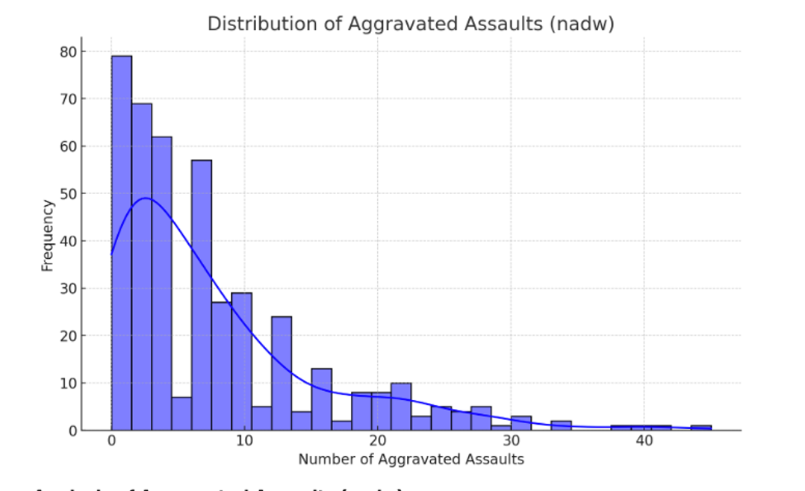

In March I attended the event Three Decades of Quantitative Criminology at Manchester hosted by my colleagues David Buil-Gil and Thiago Oliveira. The event focused on teaching and research, and as one of the last speakers I wanted to look forward, and explore how current changes to the academic landscape might influence our research and teaching.
Specifically I wanted to explore how generative AI tools, like chatGPT are going to affect how we teach statistics to our criminology undergraduates. Students at universities are increasingly turning to tools like ChatGPT to help with everything from homework to research projects. In response, universities are exploring various approaches to manage this new technology, ranging from outright bans to integrating it into their curricula as a supplemental learning tool. I wondered - what is the appropriate approach for us folks teaching statistics? Embrace? Ban? Something in between? In my talk I went through a little experiment, giving chatGPT the final exam from our statistics module to see how it would perform to begin to answer this question.
Generative AI in Education
Generative AI refers to artificial intelligence that can generate text, images, and other content based on the data it has been trained on. ChatGPT, a prominent example of this technology, uses patterns in vast amounts of text data to produce human-like responses to user prompts. This makes it a versatile tool, capable of engaging in conversations, answering questions, and even assisting with creative tasks.
Relevant to us folks teaching statistics, chatGPT has an Advanced Data Analysis feature. The advanced data analyst feature of ChatGPT allows it to perform statistical analysis and generate data visualizations based on user-provided data and information. Students of statistics might use this feature to quickly interpret data sets, perform hypothesis testing, or visualise trends and patterns for class projects and assessments. If it is able to perform these tasks reliably, this could be a potential teaching tool, to complement statistical software such as R or Stata. It may remove some of the barriers that students often have around learning the technical elements of analysis, as the analysis could be as simple as typing out “please tell me the average number of homicides per county in the dataset” rather than learning the code syntax of mean(dataset$variable_name).
The big question of course is whether this is reliable enough to introduce to students as a tool or not? While many people are very enthusiastic about it, others are more skeptical. For example, my PhD student Nic Fox calls chatGPT a “fancy autocomplete”. So in my talk I wanted to put it to the test, specifically our final exam, and ask:
Can chatGPT pass my statistics module?
The experiment: putting chatGPT’s data analyst to the test
I took our final exam questions and data set from the 2021/22 teaching year. I uploaded the data set, and then copy and pasted the questions from the exam paper, taking care not to add any advantage to chatGPT through clever prompt engineering. All the information it was given was what students got.
Simple questions
The first question asks students to select an outcome variable, and justify this selection. Specifically it asks:
Select one variable from the “Crime” group (aggravated assaults (nadw), domestic violence (ndv), or number of arrests (arr)) to be your dependent variable. Your report will focus on this variable. Examine the basic descriptive statistics (including appropriate measures of central tendency, dispersion, and an appropriate visualisation) for this variable. What can you say about this variable? What do the plots and tests tell you about the normality of the distribution? Keep your answer to 250 words.
The answer from chatGPT is actually quite satisfactory.
First a justification:
For the purpose of this analysis, we will focus on the number of aggravated assaults (nadw) as our dependent variable. This choice is motivated by the intention to understand the impact of neighborhood risk factors and alcohol availability on more severe forms of violence.
Makes sense, right? I would prefer to see some references to the domain literature here to support these claims, and so there are some lost points on that, but it would still be a passable answer there.
After that there is a good range of descriptive statistics presented, the mean, the standard deviation, minimum, maximum, skewness, kurtosis, 25th and 75th percentiles, and the numbers are all correct. And there is even some interpretation of what the numbers mean. For example:
The kurtosis value of 3.08 indicates a leptokurtic distribution, which means the distribution has heavier tails than a normal distribution, pointing towards the presence of outliers with unusually high counts of aggravated assaults.
It then produces a histogram (see Figure 1) and a little description of it as well:
The histogram of aggravated assaults (’nadw’) visually reinforces the findings from our statistical analysis. It shows a right-skewed distribution with a concentration of data points at the lower end of the scale and a long tail extending towards higher counts of aggravated assaults. This suggests that while many block groups experience a relatively low number of aggravated assaults, there are outliers with significantly higher counts.

Overall not too bad. I would give this a passing grade, probably a good 2:1.
Complex questions
Unfortunately as the questions become slightly more complicated, chatGPT starts committing more and more errors.
It started off somewhat subtly. Question 3 asks students to choose and justify a cutoff value to slice a numeric variable into a categorical “high number of alcohol outlets” and “low number of alcohol outlets”. There are many options to choose, and there is no ‘wrong’ choice as long as it is justified either methodologically or using references to literature. Here is chatGPT’s justification:
To categorize neighborhood blocks into “low” and “high” groups based on the number of alcohol outlets per square mile (ttlaloulet_sqmi), we employed the median of ttlaloulet_sqmi as the threshold. This approach ensures an equitable division of the dataset, with roughly half of the observations falling into each category. Specifically, census blocks with a ttlaloulet_sqmi value below the median are classified as “low”, while those with a value equal to or above the median are classified as “high”. This method was chosen for its simplicity and fairness in splitting the dataset, particularly useful in situations where a normal distribution of the data cannot be assumed.
I’m not sure about “simplicity” and “fairness”, and it seems a little waffly, but I could at this point still be convinced that this is reasonable. Again I would like to see some reference to sources from course readings to support these justifications. But then it continues:
The use of the median as a threshold for categorization allows for an intuitive understanding of the data, where “high” and “low” categories represent above-average and below-average densities of alcohol outlets, respectively.
Well, I thought we were choosing the median specifically because the average was not appropriate due to being unable to assume a normal distribution of the data, not the mean, so this above/below average is now not right, and just confusing.
And when we get more complex, there are just more places to fall over. Question 6 asks:
Develop a multiple regression model to predict one of the variables under “Crime“ (aggravated assaults, domestic violence, disorder) – the same one you chose in question 1 - using at least three predictor (independent) variables – one of these should be the factor you created for high/low number of alcohol outlets (“outlet_hilo”), and the other two should be the ones you chose in the previuos question Interpret and discuss your results, make sure you consider the assumptions of the test you are carrying out.
The answer we get certainly seems comprehensive and acceptable on first glance:
Model Coefficients and Significance
- Constant: The model intercept is 12.657, suggesting the expected number of aggravated assaults when all predictor variables are zero (within the context of the model’s variables).
- High/Low Number of Alcohol Outlets (outlet_hilo_dummy): The coefficient for high alcohol outlet density (-9.468) is statistically significant (p < 0.05), indicating that census blocks classified as having a high number of alcohol outlets have, on average, 9.468 fewer aggravated assaults than those with a low number of outlets. This inverse relationship is somewhat counterintuitive and merits further investigation.
- Unemployment Rate (unempl): The coefficient (-0.051) is not statistically significant (p > 0.05), suggesting that unemployment rate, within the context of this model, does not have a statistically significant impact on the number of aggravated assaults.
- Poverty Rate (pov): Similarly, the poverty rate’s coefficient (0.001) is not statistically significant (p > 0.05), indicating that within this model’s framework, poverty does not significantly influence the number of aggravated assaults.
Model Fit R-squared: 0.338, indicating that approximately 33.8% of the variability in aggravated assaults is explained by the model. While this suggests that the model captures a significant portion of the variance, there’s still a large proportion of variability unexplained, pointing to the influence of other factors not included in the model.
Assumption Checks
- Multicollinearity: The Variance Inflation Factor (VIF) values for all predictors are below 5, suggesting that multicollinearity is not a concern for this model.
- Normality of Residuals and Other Assumptions: While the model summary provides insights into the regression analysis, further tests and plots (e.g., residual plots, Q-Q plots) would be necessary to fully assess the assumptions of linearity, homoscedasticity, and normality of residuals.
Interpretation and Discussion: The findings indicate a significant negative association between high alcohol outlet density and aggravated assaults, which is contrary to some expectations that higher alcohol availability might correlate with increased violence. This could suggest the presence of other moderating factors or the effectiveness of regulatory and community interventions in high-density areas. The lack of statistical significance for unemployment and poverty rates suggests that, in isolation, these socioeconomic factors do not directly predict the number of aggravated assaults in the model, which contrasts with broader criminological literature emphasizing their role in crime dynamics.
Again, convincing, if we weren’t expecting the exact opposite results. There should be a strong positive relationship between alcohol outlets and violent crime.
Now a nice thing about data analyst is that you can go in and look at the code that was used to get these results. And so we did just that. Below is the code (in Python):
#from sklearn.linear_model import LinearRegression
#from sklearn.model_selection import train_test_split
#from sklearn.metrics import mean_squared_error, r2_score
#from scipy.stats import shapiro
#import statsmodels.api as sm
#from statsmodels.stats.outliers_influence import variance_inflation_factor
# Preparing the data for regression analysis
#data['outlet_hilo_dummy'] = pd.get_dummies(data['outlet_hilo'], drop_first=True) # 'high' = 1, 'low' = 0
# Independent variables
#X = data[['outlet_hilo_dummy', 'unempl', 'pov']]
# Dependent variable
#y = data['nadw']
# Add a constant to the model (intercept)
#X_const = sm.add_constant(X)
# Fit the model
#model = sm.OLS(y, X_const).fit()
# Model summary
#model_summary = model.summary()
# Checking VIF for multicollinearity
#VIF = pd.DataFrame()
#VIF["Variable"] = X_const.columns
#VIF["VIF"] = [variance_inflation_factor(X_const.values, i) for i in range(X_const.shape[1])]
#model_summary, VIF
Firstly, while it does appear to import the libraries we would expect it to use (e.g. from sklearn.linear_model import LinearRegression), it does not actually use them. At all. Which is of course fine, it can decide it wants to use something else although I would then ask why import them?
But the key here is that somewhere it seems to flip the coding of high/ low alcohol outlet areas. We suspect it is this line:
# Preparing the data for regression analysis
#data['outlet_hilo_dummy'] = pd.get_dummies(data['outlet_hilo'], drop_first=True) # 'high' = 1, 'low' = 0
Since the variable is already a dummy variable, it’s not clear why this is done. So it was time to ask some questions.
Debugging the analyst
If this were just code, we would now move on to debug this. And of course, we can take this code out of chatGPT and run it ourselves in our own environments, and debug that way, but that’s not the point. What we wanted to explore is chatGPT as a platform/ environment for our student to run their statistics within. So in this case, as chatGPT is our analyst, we had to debug the analyst itself.
To do so we asked:
looking at your code for the regression, why is this step necessary: “# Preparing the data for regression analysis #data[‘outlet_hilo_dummy’] = pd.get_dummies(data[‘outlet_hilo’], drop_first=True) # ‘high’ = 1, ’low’ = 0”
To which we got a very long answer. With multiple bullet points. For those who would like to read it, here it is:
The step you are referring to is crucial for a few reasons:
- Numerical Representation: Regression models require numerical input for calculation. Categorical variables like “high” and “low” don’t inherently carry numeric value or order, making it necessary to encode them into a numerical format.
- Binary Categories: In this case, outlet_hilo is a binary categorical variable with two possible values: high and low. By using pd.get_dummies() with the drop_first=True argument, we convert this categorical variable into a dummy variable where:
- “high” is represented by 1
- “low” is implicitly represented by 0 (since it’s the dropped first category)
- Preventing Redundancy: The drop_first=True argument is used to avoid the “dummy variable trap,” a scenario where dummy variables are highly correlated (multicollinearity). For binary categories, keeping both dummy variables (0 for low and 1 for high) introduces perfect collinearity because knowing the value of one directly implies the value of the other. Dropping one category (in this case, “low”) and using the remaining dummy variable allows the model to avoid this issue while still capturing the effect of the category on the dependent variable.
- Interpretation: With the dummy variable, the regression model’s coefficients can be interpreted in terms of the presence or absence of a characteristic (e.g., high alcohol outlet density). Specifically, the coefficient for outlet_hilo_dummy reflects the difference in the dependent variable (number of aggravated assaults) when moving from the baseline category (“low” alcohol outlet density, represented by 0) to the other category (“high” alcohol outlet density, represented by 1).
These all sound like reasons, but they are not. Possibly step one we can re-code high and low as 1 and 0 if the specific function used requires this, but there are simpler ways to do this. The second reason is the same as the first? The ‘preventing redundancy’ seems like a problem created by taking this step in the first place, and interpretation once again can be solved more easily (and in fact this is where the mistake was made). So there are a lot of points made, but none very convincing.
Let’s try to ask the question again in another way:
why was this approach chosen rather than recoding simply higher value = 1 and lower value = 0 ?
And at this point it appears chatGPT takes on the form of the biggest BS artist I ever did see. Here is the answer:
The approach of using pd.get_dummies() with the drop_first=True option to create a binary dummy variable from a categorical variable, rather than simply coding the higher value as 1 and the lower value as 0 based on some continuous measure directly, is chosen for several important reasons:
- Flexibility and Clarity: Utilizing pd.get_dummies() allows for a clear, systematic conversion of categorical variables into dummy/indicator variables. This method is especially useful when dealing with categorical data that isn’t inherently ordinal or when the categories are not simply ‘higher’ or ’lower’ in a numerical sense. It ensures clarity in how the categories are defined (e.g., high vs. low alcohol outlet density based on a median split) and applied within the model.
- Generalization to More Categories: While this specific case involves a binary variable, the pd.get_dummies() function is versatile and can easily handle categorical variables with more than two levels without additional coding effort. This makes it a robust choice for preprocessing data for regression analysis, ensuring consistency in handling categorical variables across different models and datasets.
- Automatic Handling of Categorical Data: By using pd.get_dummies(), the process of converting categorical variables into a format suitable for regression analysis is streamlined. This method automatically creates the necessary columns for each category (while optionally dropping one to avoid multicollinearity) and ensures that the model correctly interprets the presence or absence of categorical attributes.
- Avoiding Arbitrary Assignments: Directly coding categories based on a subjective interpretation of ‘higher’ or ’lower’ values could introduce bias or misinterpretation, especially in cases where the categorization isn’t based on an intrinsic ordinal relationship. Using a median split to define ‘high’ and ’low’ categories, and then applying pd.get_dummies(), is a more objective approach that relies on the data’s distribution. It ensures that the categorization reflects a meaningful and data-driven distinction between groups.
- Statistical Rigor: This method respects the statistical principle of avoiding the dummy variable trap in regression models. It ensures that each category’s effect is measured relative to a baseline (the dropped category), providing clear and interpretable coefficients that reflect the difference between categories without introducing multicollinearity.
I particularly like how it says clarity was achieved by this roundabout and obtuse step, and also statistical rigor - what? But none of these are actual reasons that justify the actions taken, and at this point I am very much losing hope. So in a final attempt we try to debug using chatGPT by requesting to see the dataframe before and after the transformation. We ask:
can you show me the columns and the first few rows of the data set before and after this transformation
And chatGPT says:
And from this point we just got this message over and over again.
Conclusions from this small experiment
This small experiment suggests that while ChatGPT can efficiently handle straightforward questions, it struggles with complex analytical tasks. When pressed, it does a very verbose and superficially convincing-looking attempt at justifying incorrect answers or unnecessary steps, but upon closer inspection we can see these are essentially nonsense.
In sum? Can chatGPT pass my statistics module? No, probably not.
Implications for using generative AI in statistics teaching
This inconsistency highlights the current limitations of using AI as a standalone educational tool. The failures and the confident but nonsensical justifications mean that for not this would just confuse and mislead students, rather than clarify or simplify analysis for them.
This doesn’t mean that I am siding with “ban” over “embrace”. It just means that we have to be careful and that we have to make it clear to students that for now, this tool is not as reliable as they might initially think. It might be closer to “fancy autocomplete” than to Iron Man’s J.A.R.V.I.S. still, and therefore they should exercise caution in putting their trust (and grades) in it’s proverbial hands.
This was a very small experiment, and I am sure we can use this in more clever ways, and that students are already using it in more clever ways to help their learning. Ultimately I assume we are now entering a time of many discussions on integrating AI to complement traditional teaching methods without undermining learning objectives. Most important is that these discussions are evidence-based, and they consider exactly what the current technology can and cannot do well.